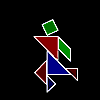

Tangram
- Chinese pictures
The Chinese tangram consisits of 7 pieces, five triangles, a parrellogram and a square. They easily form a square and a host of other shapes. These were usually supplied in silouhette form, as a puzzle you had to recreate the shapes.
This programs draws the seven tangram pieces as they transform from one shape to another. The pieces are drawn from the centre to allow for rotation.
To New
# set default screen, pen and turtle values
ResetAll SetScreenSize [400 400] HideTurtle
SetSC Black SetPC Green SetPS 1 PenUp
End
To Init
# Global lists, 7 tan pieces and picture list
Make "Tans [[Tri1 24] [Tri2 24] [Tri2 17] [Squ] [Par] [Tri1 12] [Tri2 12]]
Make "Pics [[Start] [Running_Man]]
End
To Display
# write header title and name
SetPC White SetH 0
SetPos [-190 184] Label Sentence [Tangram] :EndName
End
To Slide
For [Step 0 64] [Wash
For [N 1 7] [
Make "DD :Step / Minus 64
SetX Delta :N :DD 1
SetY Delta :N :DD 2
SetH Delta :N :DD 3
Run Item :N :Tans]
Refresh]
Display Refresh Wait 120
End
To Delta :N :DD :M
Make "Differ (Item :M Item :N :Start) - (Item :M Item :N :End)
Output (Item :M Item :N :Start) + (:DD*:Differ)
End
To Go
New Animation Init
Make "Start Run (Item 1 :Pics) # Global list
Make "EndName Item 2 :Pics
Make "End Run (:EndName) # Global list
Slide
Make "Start :End
Make "EndName Item 1 :Pics
Make "End Run (:EndName) # Update global lists
Slide
End
To Tri1 :Side
Make "Slant :Side*SqRt 2
Right 45 Back 1.33*:Slant Left 45
SetPC Sentence [0 0] :Side * 5 PenDown
Forward 4*:Side Right 135 Forward 4*:Slant
Right 135 Forward 4*:Side PenUp
Right 135 Forward 1.33*:Slant PenDown FillZone PenUp
Back 1.33*:Slant Left 45
SetPC White PenDown
Forward 4*:Side Right 135 Forward 4*:Slant
Right 135 Forward 4*:Side PenUp
End
To Tri2 :Side
Make "Slant :Side*SqRt 2
Right 45 Back 1.33*:Slant Left 45
SetPC Sentence :Side * 5 [0 0] PenDown
Forward 4*:Side Right 135 Forward 4*:Slant
Right 135 Forward 4*:Side PenUp
Right 135 Forward 1.33*:Slant Pd FillZone PenUp
Back 1.33*:Slant Left 45
SetPC White PenDown
Forward 4*:Side Right 135 Forward 4*:Slant
Right 135 Forward 4*:Side PenUp
End
To Squ
Back 34 Left 45
SetPC [0 108 0] PenDown
Repeat 4 [Forward 48 Right 90] PenUp
Right 45 Forward 34 Pd FillZone Pu
Back 34 Left 45 SetPC White PenDown
Repeat 4 [Forward 48 Right 90] PenUp
End
To Par
Back 24 Left 90
SetPC DarkGreen PenDown
Repeat 2 [Forward 48 rt 135 Forward 68 rt 45] PenUp
Right 90 Forward 24 Pd FillZone Pu
Back 24 Left 90 SetPC White PenDown
Repeat 2 [Forward 48 Right 135 Forward 68 Right 45] PenUp
End
To Start
Output [[-45 0 -135] [0 46 -45] [46 -46 -90] [0 -34 0]
[52 17 -45] [-34 -57 135] [24 0 45]]
End
To Running_Man
Output [[20 -67 0] [0 22 -180] [-30 -90 45] [0 90 20]
[58 4 -90] [0 -135 225] [95 -90 180]]
End
- Animation
- Art
- Cellular Auto
- Coding
- Demo
- Dot Plot
- Fractal
- Grid
- Illusion
- L-System
- Multi Turtle
- One Line
- Perspective
- Plane Filling
- Polar
- Puzzle
- Recursion
- Sound
- Spiral
- Spirograph
- Trees
- Walks


Tangram
Book Info

Pages many
Procedures blue
Variables pink
Comments green
Library gray

Visit XLogo
web site